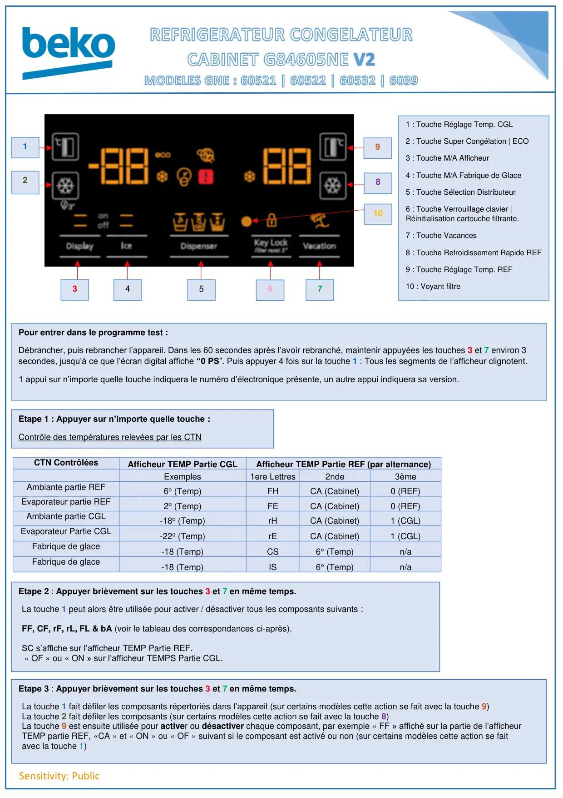
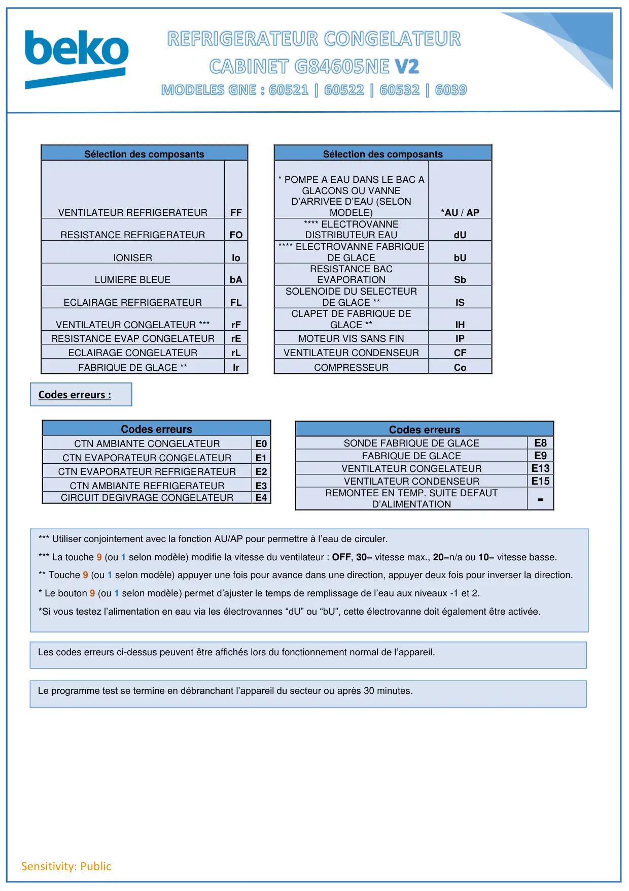
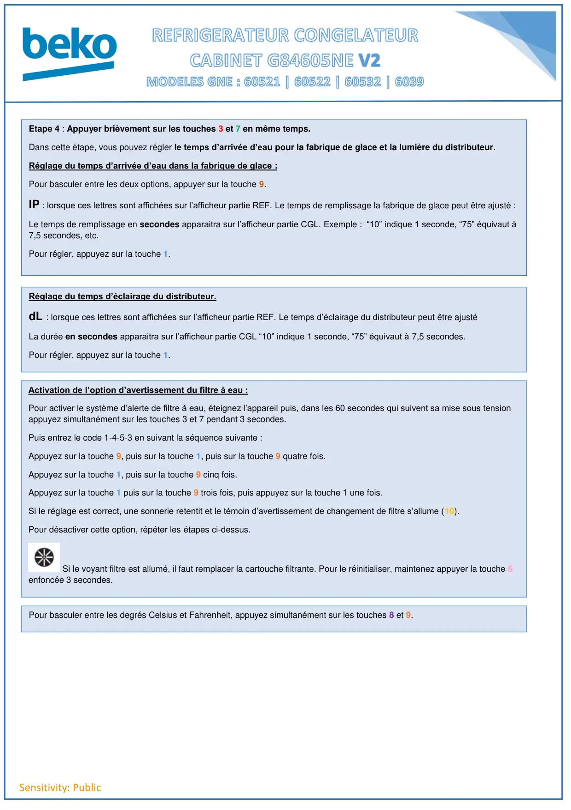

Prog Test REF gne60522 electonique 1

Sensitivity: PublicCTN ContrôléesAfficheur TEMP Partie CGLAfficheur TEMP Partie REF (par alternance)Exemples1ere Lettres2nde3èmeAmbiante partie REF6o (Temp)FHCA (Cabinet)0 (REF)Evaporateur partie REF2o (Temp)FECA (Cabinet)0 (REF)Ambiante partie CGL-18o (Temp)rHCA (Cabinet)1 (CGL)Evaporateur Partie CGL-22o (Temp)rECA (Cabinet)1 (CGL)Fabrique de glace-18 (Temp)CS6° (Temp)n/aFabrique de glace-18 (Temp)IS6° (Temp)n/a1234567981 : Touche Réglage Temp. CGL2 : Touche Super Congélation | ECO3 : Touche M/A Afficheur4 : Touche M/A Fabrique de Glace5 : Touche Sélection Distributeur6 : Touche Verrouillage clavier |Réinitialisation cartouche filtrante.7 : Touche Vacances8 : Touche Refroidissement Rapide REF9 : Touche Réglage Temp. REF10 : Voyant filtrePour entrer dans le programme test :Débrancher, puis rebrancher l’appareil. Dans les 60 secondes après l’avoir rebranché, maintenir appuyées les touches 3 et 7 environ 3secondes, jusqu’à ce que l’écran digital affiche “0 PS”. Puis appuyer 4 fois sur la touche 1 : Tous les segments de l’afficheur clignotent.1 appui sur n’importe quelle touche indiquera le numéro d’électronique présente, un autre appui indiquera sa version.Etape 1 : Appuyer sur n’importe quelle touche :Contrôle des températures relevées par les CTNEtape 2 : Appuyer brièvement sur les touches 3 et 7 en même temps.La touche 1 peut alors être utilisée pour activer / désactiver tous les composants suivants :FF, CF, rF, rL, FL & bA (voir le tableau des correspondances ci-après).SC s’affiche sur l’afficheur TEMP Partie REF.« OF » ou « ON » sur l’afficheur TEMPS Partie CGL.Etape 3 : Appuyer brièvement sur les touches 3 et 7 en même temps.La touche 1 fait défiler les composants répertoriés dans l’appareil (sur certains modèles cette action se fait avec la touche 9)La touche 2 fait défiler les composants (sur certains modèles cette action se fait avec la touche 8)La touche 9 est ensuite utilisée pour activer ou désactiver chaque composant, par exemple « FF » affiché sur la partie de l’afficheurTEMP partie REF, «CA » et « ON » ou « OF » suivant si le composant est activé ou non (sur certains modèles cette action se faitavec la touche 1)10
1 / 3
Sensitivity: PublicSélection des composantsSélection des composantsVENTILATEUR REFRIGERATEURFF* POMPE A EAU DANS LE BAC AGLACONS OU VANNED’ARRIVEE D’EAU (SELONMODELE)*AU / APRESISTANCE REFRIGERATEURFO**** ELECTROVANNEDISTRIBUTEUR EAUdUIONISERIo**** ELECTROVANNE FABRIQUEDE GLACEbULUMIERE BLEUEbARESISTANCE BACEVAPORATIONSbECLAIRAGE REFRIGERATEURFLSOLENOIDE DU SELECTEURDE GLACE **ISVENTILATEUR CONGELATEUR ***rFCLAPET DE FABRIQUE DEGLACE **IHRESISTANCE EVAP CONGELATEURrEMOTEUR VIS SANS FINIPECLAIRAGE CONGELATEURrLVENTILATEUR CONDENSEURCFFABRIQUE DE GLACE **IrCOMPRESSEURCoCodes erreursCTN AMBIANTE CONGELATEURE0CTN EVAPORATEUR CONGELATEURE1CTN EVAPORATEUR REFRIGERATEURE2CTN AMBIANTE REFRIGERATEURE3CIRCUIT DEGIVRAGE CONGELATEURE4Codes erreursSONDE FABRIQUE DE GLACEE8FABRIQUE DE GLACEE9VENTILATEUR CONGELATEURE13VENTILATEUR CONDENSEURE15REMONTEE EN TEMP. SUITE DEFAUTD’ALIMENTATION-*** Utiliser conjointement avec la fonction AU/AP pour permettre à l’eau de circuler.*** La touche 9 (ou 1 selon modèle) modifie la vitesse du ventilateur : OFF, 30= vitesse max., 20=n/a ou 10= vitesse basse.** Touche 9 (ou 1 selon modèle) appuyer une fois pour avance dans une direction, appuyer deux fois pour inverser la direction.* Le bouton 9 (ou 1 selon modèle) permet d’ajuster le temps de remplissage de l’eau aux niveaux -1 et 2.*Si vous testez l’alimentation en eau via les électrovannes “dU” ou “bU”, cette électrovanne doit également être activée.Le programme test se termine en débranchant l’appareil du secteur ou après 30 minutes.Codes erreurs :Les codes erreurs ci-dessus peuvent être affichés lors du fonctionnement normal de l’appareil.
2 / 3
Sensitivity: PublicEtape 4 : Appuyer brièvement sur les touches 3 et 7 en même temps.Dans cette étape, vous pouvez régler le temps d’arrivée d’eau pour la fabrique de glace et la lumière du distributeur.Réglage du temps d’arrivée d’eau dans la fabrique de glace :Pour basculer entre les deux options, appuyer sur la touche 9.IP : lorsque ces lettres sont affichées sur l’afficheur partie REF. Le temps de remplissage la fabrique de glace peut être ajusté :Le temps de remplissage en secondes apparaitra sur l’afficheur partie CGL. Exemple : “10” indique 1 seconde, “75” équivaut à7,5 secondes, etc.Pour régler, appuyez sur la touche 1.Réglage du temps d’éclairage du distributeur.dL : lorsque ces lettres sont affichées sur l’afficheur partie REF. Le temps d’éclairage du distributeur peut être ajustéLa durée en secondes apparaitra sur l’afficheur partie CGL “10” indique 1 seconde, “75” équivaut à 7,5 secondes.Pour régler, appuyez sur la touche 1.Activation de l’option d’avertissement du filtre à eau :Pour activer le système d’alerte de filtre à eau, éteignez l’appareil puis, dans les 60 secondes qui suivent sa mise sous tensionappuyez simultanément sur les touches 3 et 7 pendant 3 secondes.Puis entrez le code 1-4-5-3 en suivant la séquence suivante :Appuyez sur la touche 9, puis sur la touche 1, puis sur la touche 9 quatre fois.Appuyez sur la touche 1, puis sur la touche 9 cinq fois.Appuyez sur la touche 1 puis sur la touche 9 trois fois, puis appuyez sur la touche 1 une fois.Si le réglage est correct, une sonnerie retentit et le témoin d’avertissement de changement de filtre s’allume (10).Pour désactiver cette option, répéter les étapes ci-dessus.Si le voyant filtre est allumé, il faut remplacer la cartouche filtrante. Pour le réinitialiser, maintenez appuyer la touche 6enfoncée 3 secondes.Pour basculer entre les degrés Celsius et Fahrenheit, appuyez simultanément sur les touches 8 et 9.
3 / 3